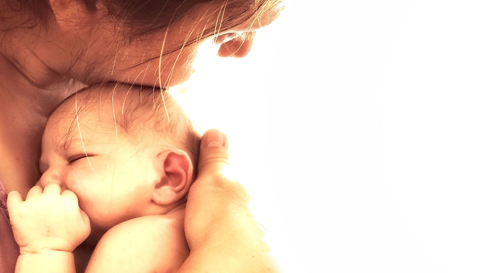

¿Quién soy?
Soy María, y junto a mi pareja y mi hijo Noah de 27 meses qué estará conmigo en este proyecto, abrimos nuestra casa con toda la ilusión y todo el amor, para acoger a las familias y a sus hijos/as.
Tata nace a partir de la vivencia personal mas importante de mi vida: la llegada de mi hijo Noah. Su nacimiento supuso una gran sacudida interna de renovación, para sacar lo mejor de mi misma.
Desde donde puedo recordar, mi vida ha sido como una especie de idas y venidas en el mundo de la educación, sin que nunca haya podido dedicarme del todo por varias circunstancias, entre otras, haber elegido demasiado joven hacer estudios relacionados con trabajos administrativos, y que nunca me han llevado donde yo quería. A pesar de que esto, lo he ido descubriendo poco a poco.
En estas idas y venidas, hice el curso de monitora de tiempo libre, el Técnico Superior en Educación Infantil, haciendo mis prácticas en un CRAE donde justo después me contactaron un tiempo para hacer las sustituciones del centro. Desgraciadamente necesitaba un trabajo más estable, más continuado, y con todo el dolor de mi corazón, tuve que volver otra vez al mundo administrativo.
Aun así, siempre he agradecido la oportunidad de trabajo y he procurado hacerlo lo mejor qué he podido, intentando, siempre, llegar a todo tipo de personas para que depositaran su confianza en mí.
Al finalizar mi baja por maternidad y llegar el momento de reincorporarme a mi trabajo, era complicado pedir una reducción de jornada debido al volumen de trabajo y dejé mi puesto en mi empresa aceptando las condiciones que me ofrecían.
Marchar de mi empresa me removió muchas cosas ya que habían sido años de esfuerzo y dedicación para consolidar mi trabajo. Por otro, estaba aliviada y tranquila de no tener que separarme de Noah.
Fue a partir de aquí, cuando empecé a darle vueltas a la idea de ser madre de día y a buscar información y formación para conseguirlo.
Para poder emprender y llevar a cabo mi proyecto, realmente, me ayudó mucho ponerme en la piel de otras madres que, como yo, se encontraban en la situación de tener que volver a su puesto de trabajo y verse obligadas a tener que dejar a su criatura de 4 meses en una Llar d'infants. Me puse en su lugar a partir de mi vivencia personal y pensé qué, de haber tenido que volver a mi trabajo, seguramente me hubiera planteado llevar a Noah a una madre de día, una alternativa a las Llars convencionales para los primeros meses e incluso, tres primeros años cuando la madre no tiene más remedio que volver a su puesto de trabajo.
La madre de día es una opción respetuosa con el ritmo individual de cada niño, y que sin masificaciones disponen de un ambiente sin prisas, donde se les concede su derecho a permanecer en un entorno como el de casa.
Además del técnico en educación infantil, soy asesora de lactancia realizando mi formación en Prolactar. Soy diplomada como guía Montessori en el IMI (International Montessori Institute). Dispongo además de los cursos de formación necesarios para este proyecto: Primeros Auxilios, Manipulación de alimentos, Educación Viva “metodología de ambientes”, así como otra formación de interés: Educación Inclusiva de Autismo, TDAH y Dislexia, y formación en Inteligencia Emocional y Comunicación no Violenta.
